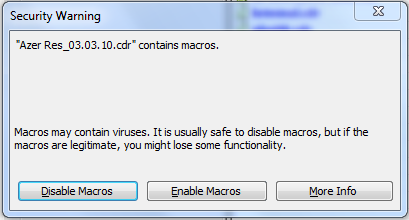
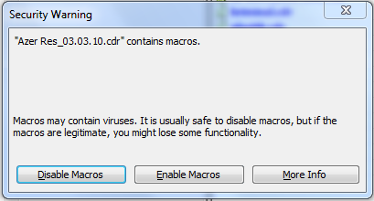
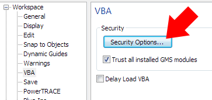

Disable Macros
Des425 / 04.03.2010, 14:12/00:41
Форум:
Как можно автоматически удалить внедренные макросы во всех файлах?
Или есть способ отключить это окошко?

Как можно автоматически удалить внедренные макросы во всех файлах?
Или есть способ отключить это окошко?

Поиграйся с этим:

Sancho, спасибо!